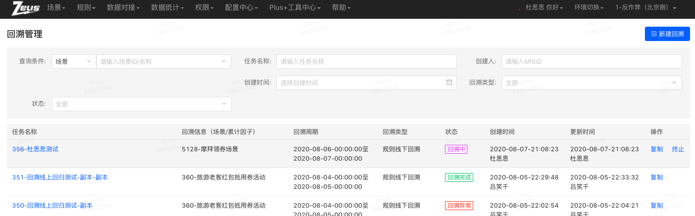
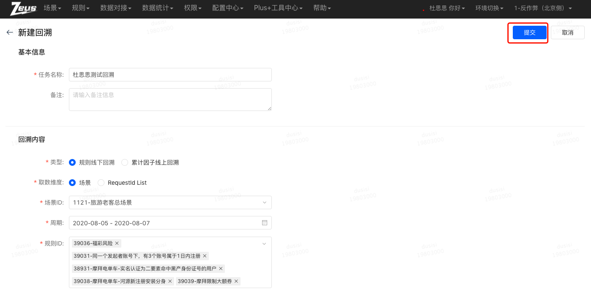
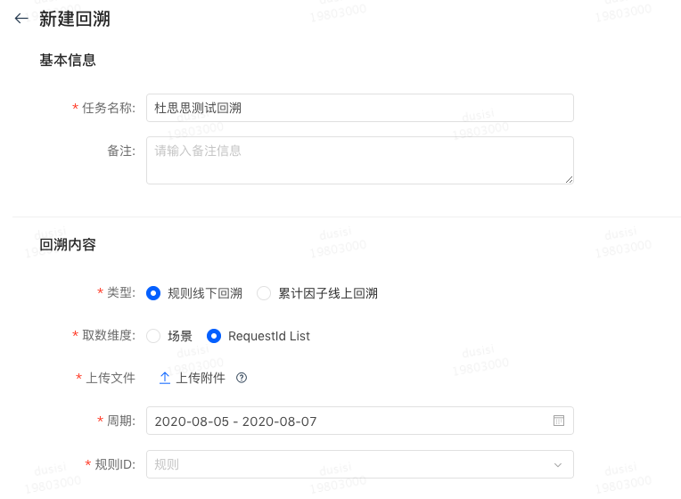
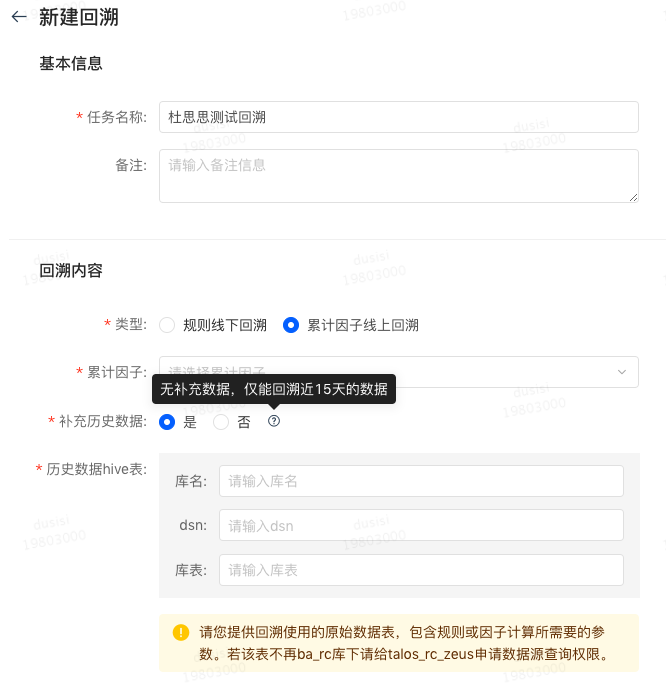
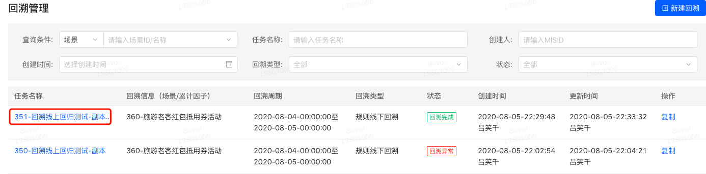
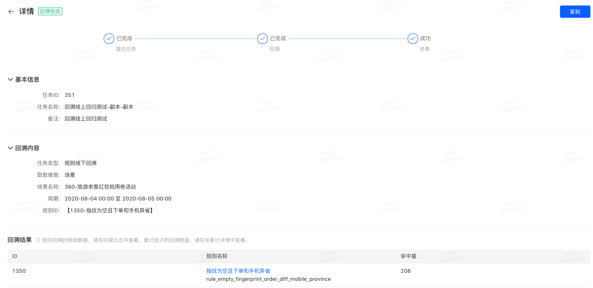
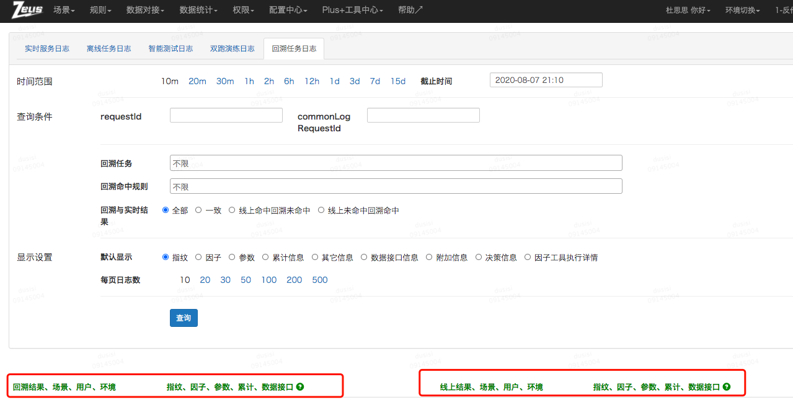

说明：回溯功能
一、背景
规则平台的回溯功能，支持使用历史数据进行规则的再次执行，用于新规则逻辑的评估验证、历史风险的分析评估等
在2019年初上线的回溯功能，仅能支持近15天的日志进行回溯、回溯结果无详情查看、不支持累计因子回溯直接线上应用等。因此本期针对如上问题对回溯服务进行升级
二、名词解释
- 规则线下回溯：使用历史日志数据进行规则的执行，⚠️回溯过程中无法调取外部数据接口，日志中有什么参数就执行什么。即名单库、数据接口均不会调用
- 累计因子线上回溯：使用历史数据进行累计因子数据重构，重构后的累计因子值可直接应用到线上，用于规则识别
三、操作指南
1.用户操作流程说明

tips：若想要进行超过15天的长周期回溯，需要业务自行提供原始hive数据
2.QuIck Star
--待补充--
3.详细操作流程说明
step1:创建回溯任务
|
说明 |
页面 |
|---|---|
|
【入口】 Plus工具中心-->回溯管理 -->创建回溯任务
|
 |
|
   |
step2:查看回溯结果
|
说明 |
页面 |
|---|---|
|
回溯管理 -->回溯任务名称
|
 |
|
 |
step3:查看回溯日志
|
说明 |
页面 |
|---|---|
|
【入口】 数据统计-->实时服务日志-->回溯任务日志
|
 |
三、FAQ
Q1:支持多个回溯任务并行支持么？最多可支持多少个？
A：支持，最多两个
Q2:一个回溯任务支持多个规则回溯么？最多可支持多少个？
A：支持，根据数据量实际情况而定
Q3:累计因子回溯任务支持的最长周期是多少？
A：15天以内不需要业务提供数据源，超过15天，需要业务提供离线hive表
Q4:回溯的规则中，若存在累计周期大于15天的因子可以回溯么？
A：本期暂不支持，预计9月初支持
Q5:自定义数据源的格式有哪些要求？
A：
规则回溯数据表结构要求：
dt string '数据时间分片字段'
addtime string ‘数据发生的时间’(时间戳，单位秒)
paramContext string(json格式)参数上下文
businesCode int 业务id@吕笑千，给一个数据实例
累计回溯数据表结构要求：
dt string '数据时间分片字段'
addtime string ‘数据发生的时间’ (时间戳，单位秒)
accumulateEventId int ‘对应Zeus上的累计事件ID’
contextList string(json格式) ‘累计事件详情信息，包含累计key、value和条件中涉及的参数信息，若是参数中有因子的话，就提供基础的参数信息就可以’@吕笑千，给一个数据实例
未完待续～～